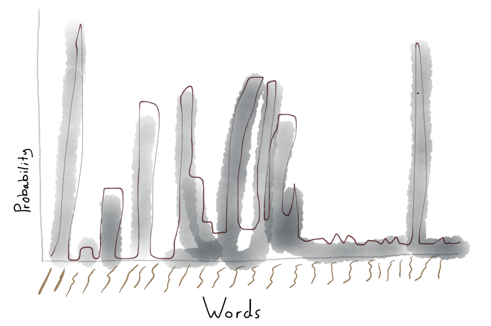
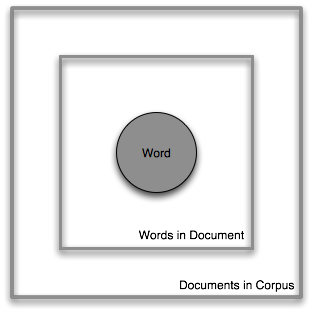
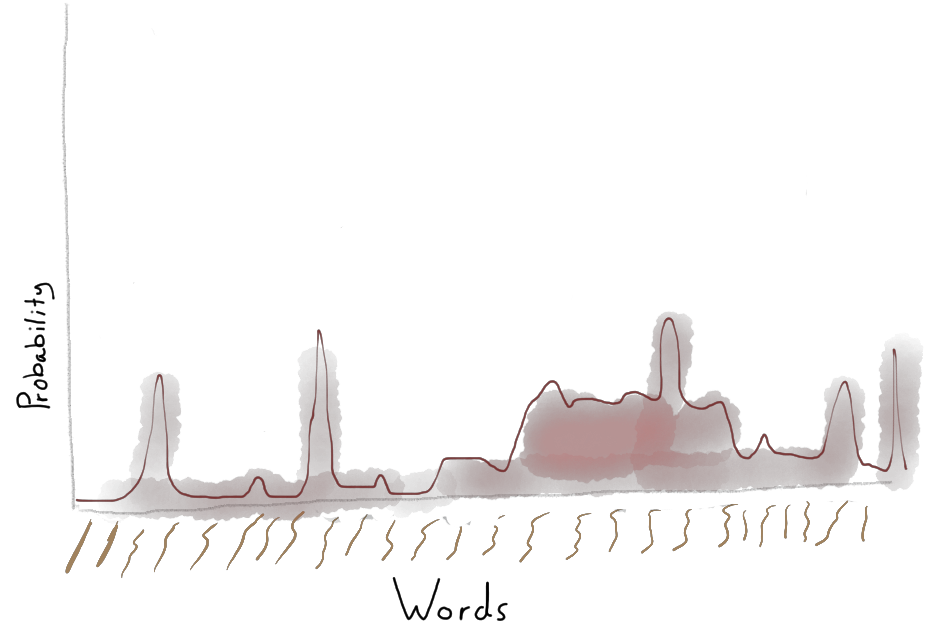
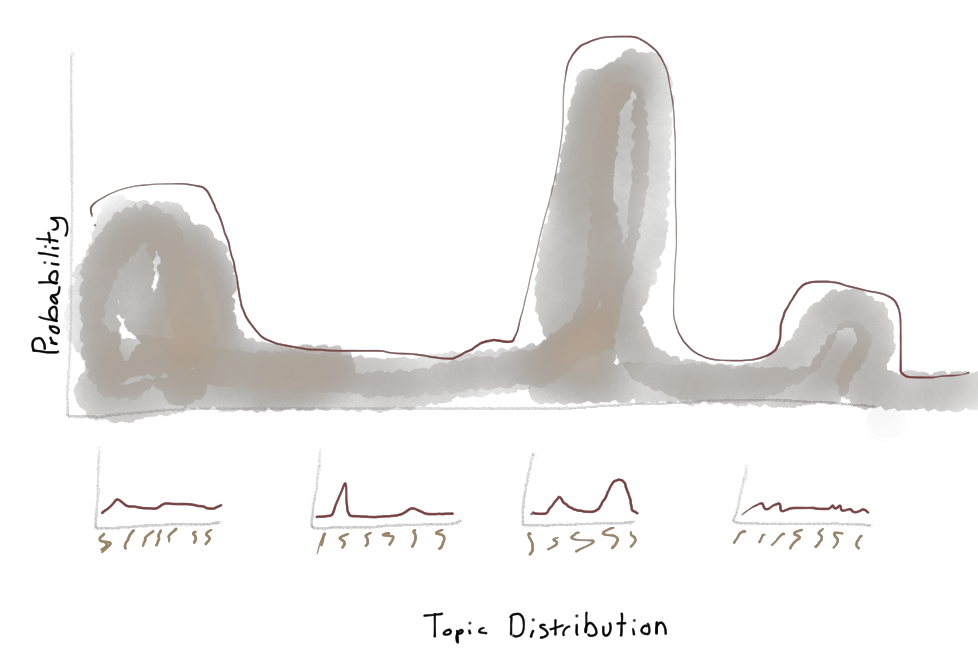
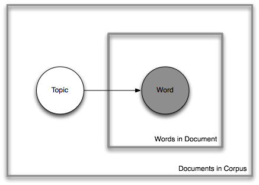
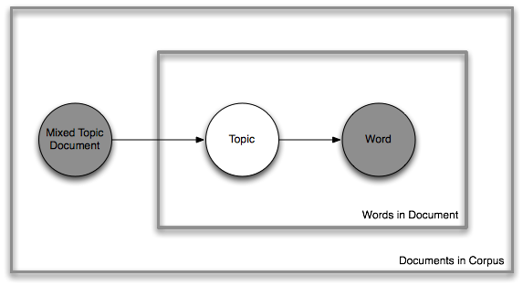
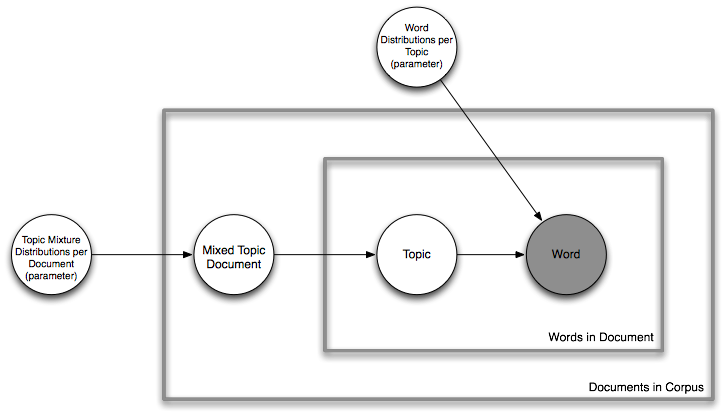
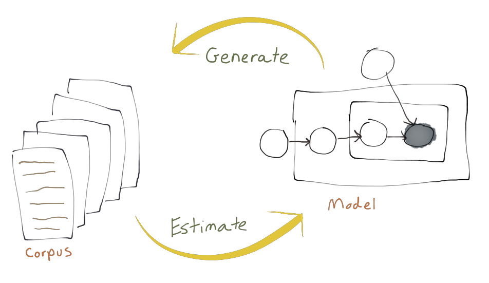

A bag of words by Matt Burton on the 21st of May 2013
Topic modeling is a catchall term for a group of computational techniques that, at a very high level, find patterns of co-occurrence in data (broadly conceived). In many cases, but not always, the data in question are words. More specifically, the frequency of words in documents. In natural language processing this is often called a “bag-of-words” model. A bag-of-words model has the effect of simplifying the complex structure of natural language by ignoring syntax and grammar and focusing on the frequency of words within documents. So instead of a properly ordered, grammatically correct sentence, the bag-of-words approach slices and dices text into a table of words and frequency counts.
You might wonder, “How can we find meaning without structure? Without order the meaning is lost!” Yes, significant context is lost by only counting words in documents. Such concerns are absolutely correct, but counting words is still quite effective.[1] My purpose here is not to engage in a prolonged argument about the epistemic validity of topic modeling’s underlying assumptions; I merely want to describe them because I don’t think they have been well articulated in other introductions to topic modeling. It is my hope as scholars from the humanities and interpretive social sciences learn more about topic modeling, text mining, and natural language processing, that their knowledge of language and writing will inform the state-of-the-art of text and language models.
To understand and interpret topic models, it is important to have a solid understanding of how topic models work. Topic models have been described from a variety of perspectives, ranging from the metaphorical, like Jocker’s LDA Buffet,[2] to the rigorously mathematical, like Blei, Ng, and Jordan’s article introducing LDA in the Journal of Machine Research,[3] to the pragmatic, like Brett’s introduction in the Journal of Digital Humanities.[4] My goal is to describe topic modeling by complementing existing introductions to topic modeling and filling some important bits of information they have left out.
The following treatise has three parts. First, a brief jaunt into what I mean when I say “model.” Second, a deeper discussion into what I mean by word, document, and topic. Third, a non-mathy description of topic models by tracing the evolving complexity of four generative language models. Not everything I cover here is directly related to topic modeling, but I think much of what I cover are assumptions and information generally left out of most topic modeling conversations. It is difficult to understand how topic modeling works if you don’t understand natural language processing concepts like tokenization and stemming. Additionally, I think the distinction between a topic model’s generative process, and the estimation of a topic model’s parameters is an important detail left out of most discussions on topic modeling. Scholars interested in topic modeling need to know this stuff, so I have done my best to assemble it all together in one, perhaps messy, place.
The topic models I discuss here are known as generative topic models. Generative models try to represent, in computational abstraction, a process by which documents in a corpus could be authored. It is important to recognize such computational models are not claiming “this is how these documents were actually authored,” rather they are probabilistic approximations of the document creation process. In the Companion to Digital Humanities,[5] Willard McCarty explores what the term modeling means in a computational context.
Two effects of computing make the distinction between "idea" or other sort of mental construct on the one hand, and on the other "model" in the sense we require: first, the demand for computational tractability, i.e., for complete explicitness and absolute consistency; second, the manipulability that a computational representation provides.
These two effects of computation that McCarty points out are crucial for understanding how topic modeling works and the kinds of knowledge it produces. First, computational tractability might be, for someone not trained in computer science or programming, a somewhat alien concept. To help illustrate this tractability problem, I want to share a wonderful anecdote from early pioneer of computational art, Frieder Nake. In the wonderful documentary, Hello World! Processing,[6] Nake tells the story of an interaction between another early computational artist Georg Nees and the painter Hans Drucker at a 1965 exhibition of Nees’s computational art.
The leadings fine artist, the painter Hans Drucker, raised his hand and said, “young man” addressing Georg Nees, “all said very well, what you told us, but you know what, could you make your machine draw the way I draw?” and Nees pondered for a moment and said, “you know what, if you tell me how you draw I can make my machine do it.”
Nake explains how Drucker and Nees were both correct, Drucker assumed Nees’s answer would be “no,” because there is no way a machine could replicate the richness and complexity of a human’s artistic talent. Nees, however, pointed out that a machine can do anything if you can describe how to do it. Computational tractability requires models to be expressed using the explicit and precise mathematical language of algorithms. The challenge is not that a computer cannot produce (or replicate) art, it is that art, as with many processes, defy reification into a formalized set of steps. Much of human action and understanding lives in what Michael Polanyi calls the tacit dimension,[7] which is best articulated by Polanyi’s famous aphorism “we know more than we can tell.” Indeed, we know more than we can tell computers.
The second effect of computing as described by McCarty involves an understanding of representational manipulability. When we describe a model and make it computationally tractable, we make it material (in a manner of speaking) and subject to, and the arbiter of, mechanical/computational manipulation. There is a deep sense of movement and change associated with computation; when we make our models tractable, we articulate a series of steps, an algorithm, for the computer. I sometimes like to jokingly think of computation as math with motion. But what is crucial to understand with respect to movement and manipulability, is we do not know what will come out of a computational process until it occurs. McCarty connects this sense of movement to emergent understanding and knowledge. Models are, in McCarty’s words, “temporary states in a process of coming to know rather than fixed structures of knowledge.”[8]
First and foremost, it is important to understand the strange meanings word, document, and topic assume in the world of language modeling.
At the start of any text mining adventure, the natural sequences of words, the sentences and paragraphs of written documents are broken up via a process called tokenization. Individual words become unigrams or individually unique tokens. Tokens are not always equivalent to words because the tokenization process may count two or more words together as a single token, creating what are called bigrams or ngrams. For example, the words “digital humanities” could be a bigram or two individual unigrams, “digital” and “humanities.” Tokenization is more of an art than a science, it requires subjective decisions as well as domain understanding of the texts being processed.
There are typically two additional pre-processing steps applied to tokenized text before we can partake in the joy of topic modeling. The first involves the removal of stop words and the second is stemming. I should note, there are other flavors of preprocessing, such as parts-of-speech tagging and removal, but I won’t be covering them here.
Once the beautiful prosaic text has been sliced and diced, it contains tokens like “and,” “but,” or “or.” These stop words are a wrench in the gears of bag-of-words language modeling producing incomprehensible or low-value output. Stop words lose their meaning once they have been decontextualized from their positions in the sequential order of the original texts. Stop words lists are often part of text mining or natural language processing software packages, posted on the web, or passed around from researcher to researcher. Alternatively, they might be generated for a specific corpus using techniques like term frequency-inverse document frequency[9] ranking, a technique that ranks a word’s prevalence in individual documents against their prevalence across a corpus of documents. This has the effect of giving words common across all documents, like stop words, a low ranking enabling the possibility of creating a corpus or domain specific stop word list by selecting all words with a score less than some specified value.
Stopwords illustrate a couple interesting, and sometimes problematic, assumptions in the pre-processing of texts. Consider the string of words “to be or not to be.” This famous sequence of words is pregnant with meaning and implications, but in the eyes of a textual pre-processor it is completely mangled. When the phrase is tokenized and counted we end up with the following representation devoid of its original meaning: [“to”:2, “be”:2, “or”:1, “not”:1, “to”1]. Further, when we filter stop words, every word in that famous phrase is completely removed.
Once the stop words have been removed, there are still morphological problems with word tokens to be overcome. Basic tokenization and term frequency is going to count “model” and “models” as separate tokens. This can be a problem because we want these tokens to be counted together. Stemming is a process that trims word tokens down to their morphological roots. Different algorithms stem more or less aggressively. A lightweight stemmer might remove pluralization or other suffixes, a more aggressive stemmer cuts words back to their lexicographical root. One very popular and aggressive algorithm used in fulltext search and information retrieval, the Porter stemmer,[10] trims words to incomprehension; "example" becomes "exampl" and "courage" becomes "courag." Such aggressive stemming is generally not very useful for topic modeling because the topics become difficult to interpret because word’s morphological roots may have different meanings.
Documents, in this strange ontological space, are not a sequence of words and punctuation as we might expect. Instead, documents are more like a word census; a sum totals of the number of times each word occurs in the original, natural document. Choosing exactly what unit of text will come to represent an individual document is a bit of an art form in topic modeling. Text’s natural partitions do not always yield the best results. For example, if you are modeling books, you might treat individual chapters or sections of a chapter as an individual document rather than the entire book. As usual, it is important to understand the nature of the text you are topic modeling to determine the appropriate unit of analysis.
To briefly recap, words are not words as we typically understand them. Words in topic modeling are unigrams, bigrams, or ngrams that have been tokenized, filtered, stemmed and counted. A collection of word counts, that is, the term frequencies, represent individual documents. Collections of documents, a corpus, are seen from the perspective of the model not as a collection of text files filled with sequences of words, but rather as a term-document matrix.
|
Vocabulary |
Document 1 |
Document 2 |
Document 3 |
|
humanities |
8 |
4 |
0 |
|
digital |
8 |
12 |
4 |
|
model |
0 |
0 |
14 |
|
... |
... |
... |
... |
In the term-document matrix, each row represents a word token resulting in one row for every word in the corpus. This collection of words is called the vocabulary. Each column in the matrix represents a single document, as represented by a set of frequencies of the term in a particular row. Often it is the case the term-document matrix contains a lot of zero entries, that is, there are terms in the vocabulary that only show up in some documents but not others (and visa versa). Such a term-document matrix is considered to be sparse.
The term-document matrix is a data structure, a computationally tractable (to use McCarty’s term) representation of the texts able to be modeled by a computational process. These pre-processing steps transforms a human readable sequence of words into a long list of word tokens, which are then counted for each individual document and (essentially) recorded in an Excel spreadsheet. Once the texts are represented as a matrix of numbers and all the messy human bits have been eliminated, the fun part, topic modeling, can begin!
Such processing is a boring and, I argue, a taken-for-granted assumption overlooked in many tutorials and introductions to topic modeling. Text pre-processing is an infrastructural process, vitally important, but also completely ordinary within the topic modeling community of practice.[11] Members of these spaces have already internalized and normalized many crucial knowledge practices making the process of socializing new members difficult. Such process need to be explicitly articulated, creating opportunities for what Lave and Wenger termed legitimate peripheral participation by new members of the practice. The practices of pre-processing text can, at first glance, seem alien to a humanities scholar versed in close reading, but as I will describe below, even bags-of-words can be used to find interesting patterns within texts.
Perhaps the most confusing aspect of topic modeling to a newcomer is the term “topic.” Topic does not mean “a matter dealt with in text, discourse, or conversation” or “a subject” or anything a reasonable person might consider a “topic” if you asked them on the street. A topic, in the domain of language models, means a probability distribution over a vocabulary of words. This means, given a list of words, each has a specific value between zero and one (or alternatively, 0% to 100%) associated with that word. The list of values represents an individual topic and different topics will (hopefully) have different values associated with each word.
One simplistic way to think about topic distributions would be as bags of words containing some varying allotment words. When I reach into the bag and pull out a word the likelihood I will pull out any particular word depends upon the allotment of words in the bag. However, the exact word you choose is unknown until you actually reach in the bag.
|
Topic |
|
|
Word |
Probability |
|
humanities |
0.01 |
|
unigram |
0.0004 |
|
digital |
0.03 |
|
model |
0.02 |
|
... |
... |
For example, in the distribution shown in the table above, I would have a 1% likelihood of selecting the word humanities, a 3% probability of selecting the word digital, a 2% chance of selecting unigram and miniscule (.04%) chance of selecting model. Also important, and not necessarily intuitive, is that each selection of a word is independent so my selections do not affect any subsequent selections, even of the same word. This would mean if my topic distribution assigned 99% probability to the word computer I will most likely select the word computer every time I draw from the distribution.

In this non-artist’s rendition of a topic, the brown squiggles along the bottom represent a vocabulary of words and the grey peaks represent individual word’s probability density. I should note, it is very unlikely you might find a topic like the one above, with such dramatic peaks and valleys, in the wild. In my (limited) experience the topic distributions are relatively flat with some small clusters of words having a bit more weight than others. The list of top words, words that are “heavy” with more probabilistic mass, are the interesting group of words to examine because they are the co-occurring words in that topic distribution.
Now that you (hopefully) understand what words, documents, and topic means from the perspective of a topic model it is time to discuss the generative models themselves.
One of the best ways to understand the assumptions of generative language models is to start with simplistic models and then work up to modern topic modeling techniques like LDA. I am drawing heavily here upon Blei et al.[12] and section four of the original LDA paper, but instead of contrasting these models with LDA, I want to build up our understanding of each model through the innovations they introduced. Starting with the simple unigram model, to the mixture of unigrams, to probabilistic latent semantic analysis, to latent dirichlet allocation. Each model rests upon a complex mathematical foundation; I am going to gloss over the math and focus more upon intuitive, but not overly simplistic, descriptions of each model’s assumptions.
As I discussed above, these are generative models. Each represents generative process that repeats on a loop, selecting word tokens from a probabilistic bag-of-words (topics) and generating unique documents from increasingly complex combinations and mixtures of these bags. The models generate words, topics, and documents as I have just explained above, not the infinitely rich structures of writing and language you are reading right not.[13] With each model I am including a representation in plate notation, a way of visually representing graphical models, and a description of the generative procedure in pseudocode. In the plate notation, a square means a looping, repeating process and a square within a square means nested loops. Circles represent variables, the shaded circles are observed variables–things we have–and the white circles are latent–things we assume are there. Topics are always latent variables, white circles, because in these models assume the existence of topics and make them a set of variables to estimate. In both cases I have attempted to simplify these representations to make them slightly less intimidating to someone unfamiliar with such forms of notation. I have used english descriptions of variables instead of Greek characters to reduce complexity.
One of the most simplistic language models, although not always considered a “topic model,” is the unigram language model. This model uses a single topic in the entire corpus. Each document in the corpora is composed of some number of words selected from a single topic distribution for the entire corpus.
The generative process of the unigram model is described in pseudo code below:
For each document in the corpus do the following:
For each word in the document do the following:
Select a word from the word distribution.
Intuitively, the model generates a document by repeatedly selecting words from a single word distribution, i.e. topic. Each word selection is independent from the words selected before and after, which means, given a word distribution where one word is highly likely, that word will frequently show up in any generated document. For example, if your word distribution, your bag of words, is about food it might assign more weight to the word ‘pizza.’ When you draw however many words from the distribution you want to ‘compose’ your document, chances are you will draw several instances of the word ‘pizza.’ Because I only have one topic distribution, that is, one bag of words, the kinds documents and corpora I can represent with this model are, probabilistically, not very likely. The chances I will be able to generate a document about ‘automobiles,’ is, probabilistically, less likely if I am given a word distribution weighted in favor of food.

The image above describes the model using plate notation. The outer square represents an iteration over every single document. The inner square represents an iteration over every word for each document. The grey circle in the middle represents the observed variable, in this case the words in each document. The shaded circle is the observed word token we select from the word distribution, a.ka. topic (below), and it is encapsulated by two squares meaning it is nested within two loops. The outer square loops over every document in the corpus and the inner square loops over every word in a document.

In the unigram model, the bag never changes as we select word after word and compose document after document. Only accommodating a single topic distribution limits the unigram model’s capacity to effectively model the complexity and richness of many human authored corpora. This is not to say the unigram model is not useful, it has been used to great effect in information retrieval, but its effectiveness as a topic model is low.
The mixture of unigrams model introduces the possibility of multiple topics, that is, more than one bag from which to draw words when generating documents. The mixture of unigram model introduces a new distribution, a distribution of topics, from which we draw a new distribution of words for each document.

The generative process of the mixture of Unigrams model is described below:
For each document in the corpus do the following:
Select a distribution of words(topic) from a distribution of topics.
For each word in the document do the following:
Select a word from that distribution of words.

The mixture of unigrams model is represented in plate notation above. The mixture of unigrams adds a new latent, or unobserved, variable to the model that represents the topic, the word distribution, from which each document will be drawing words. Because the latent variable is outside the inner square, there is only one topic per document. This is better than the unigram model which only allows one topic per corpus. This adds a bit more diversity to the model of the corpus, but not necessarily much diversity to any individual document. This means, while the corpus might be about food and books, a single document is about either food or books, but not both.
Probabilistic Latent Semantic Analysis(PLSA) also called Latent Semantic Indexing, introduced in 1999 by Thomas Hofmann, was one of the early and popular topic models. Hofmann’s model introduced several novel innovations over the simplistic techniques I described above. Like the mixture of unigrams model, PLSA models multiple topics or word distributions in the corpus, but, unlike the mixture of unigrams, PLSA allows individual documents to be composed of multiple topics. PLSA does this by sampling a distribution of topics each time we draw a word, instead of each time we create a document. The generative process of the PLSA model is described below:
For each document in the corpus do the following:
For each word in the document do the following:
Select a distribution of words from the distribution of topics.
Select a word from that distribution of words.
Notice in the plate notation below how the inner square, the “words in document” iteration, has expanded to encompass the latent topic variable. The arrows indicate a dependency; before a word is drawn from a topic, a new topic must be drawn from a distribution. Each document has it’s own unique distribution or mixture of topics. This allows individual documents to be composed of words drawn from multiple topics; a more plausible model of a document’s reality.

However, as Blei et al. point out, the ways in which the document mixtures are created are prone to overfitting, that is, the mode by which an individual document’s topic mixture is established is not robust enough to handle the addition of new documents to the corpus after the model has been generated, or trained in machine learning terms. Overfitting can be a real problem if you are using topic models to work with new documents, for example, using topic models to generate recommendations in a scholarly journal database. If you initially train your PLSA topic model on the articles you have, as you receive new articles the recommendations will get progressively worse unless you retrain using the entire updated corpus. For very large corpora, this can be prohibitively expensive computationally.
The problem of overfitting marks an interesting distinction between how computer scientists and digital humanists might use topic modeling. One of the benefits of LDA over PLSA is, as I describe below, a robust method for generating a document’s topic mixture. This feature allows a model trained on an existing corpus to identify the topic mixture of new documents without re-training the entire corpus. When, as is trendy in computer science these days, you start talking about “big data,” that is, massive corpora such as the Google Books dataset, training a model becomes computationally expensive.
However, in the digital humanities, our corpora are often (but not always) meso-scale, or as I like to put it, “bigger than a laptop smaller than a large hadron collider.” Furthermore, it is often the case there will never be any additional documents in our corpora. There is never going to be any new 19th century British and American literature. I acknowledge this is a grossly simplistic assumption about literary history and the complexities of digitization, but once a historical collection has been fully digitized it should be reasonable not to expect new documents in the corpus. Thus, if the text model you are generating is exclusively for the purposes of exploring a fixed corpus, is overfitting a problem?
Latent Dirichlet Allocation(LDA) is very similar to PLSA. If you look at the the plate notation LDA there are only two additional, though very important, latent variables added to the model.

These two corpus-level parameters introduce a Bayesian method for sampling the mixture of topics within each document. Essentially this means random sampling but not sampling just any old tea leaves or turtle shells. LDA draws randomly from a parameterized Dirichlet distribution producing, through the magic of mathematics, robust topic mixtures and word distributions able to overcome the overfitting problems of PLSA. Additionally there are fewer parameters to estimate which is important when training the model. The generative process of the LDA model is described below:
For each document in the corpus do the following steps:
Select a topic mixture distribution from a Dirichlet distribution.
For each word in the document do the following steps:
Select a topic from the topic mixture distribution.
Select a word from the word distribution selected above.
LDA describes a generative process whereby, given a Dirichlet conditioned bag filled with topic-distributions for each document, we draw a topic mixture from this bag. Then, we repeatedly draw both a topic and then a word from that topic to generate the words in that document. Voila, we have a generative model that represents the process by which a corpora of documents were created. But what about if we already have a corpus of documents?
Everything I have described so far, about the structure and underlying assumptions of generative topic models is how topic modeling works in practice. When we use topic modeling to model a corpus of text, what are practically trying to do is estimate the parameters of the model as I have described. That is, we are trying to find a model whose parameters have a high likelihood of generating the corpus if we were to use a generative process to create the corpus we have.
This is a very important distinction between topic modeling as theoretically understood and topic modeling in implementation (practice). The models I have described, in as plain of english as I can muster, are theoretical articulations of a generative process. Given a set of parameters, for LDA this would be word distributions (topics) and a topic mixtures, the process would repeatedly sample these distributions to generate a term-frequency matrix, i.e. a corpus. However, this is not how we use topic modeling in practice. Instead of having the parameters for these various distributions a priori we have, after text pre-processing, a corpus that has been generated by some topic model. The goal of topic modeling in practice is to find the model, that is, find the document topic mixtures and word distributions that generated the corpus you have.

The secret to successful topic modeling is estimating the distributions from the set of all possible distributions (an extremely large space impossible to fully enumerate) that best fits the corpus of documents at hand. This process, called parameter estimation, is where much of the mathematical complexity in topic modeling lives. There are many ways to estimate the parameters; the original LDA paper used a process called variational inference and the MALLET toolkit uses a process called Gibbs Sampling. David Mimno’s talk at the MITH Topic Modeling workshop[14] is an excellent discussion on how exactly he uses Gibbs sampling to estimate the parameters of an LDA topic model in the MALLET toolkit.[15]
My goal here was simply to unpack, in detail, a non-mathematical description of the LDA generative model in hopes that others will better understand how it is exactly that we can use these techniques to explore and understand bodies of text too large to simply read by hand. By understanding these underlying assumptions of generative language models we can first and foremost be better informed about the kinds of claims we make when we use them, but also potentially contribute in making even more robust and pragmatically useful language models for future digital humanists.
To ground this discussion, I provide some example output from the MALLET toolkit. Listed below are the top ten words from four of the ten topics I estimated based on a corpus of blog posts from Digital Humanities Now’s Editor Choice selections
Topic
0: students education cr learning student free courses class university higher
1: library access digital content public libraries future google art impact
2: data visualization information objects mining http heritage open april big
3: knowledge thinking history historical human point kind understanding place creating
I fed MALLET a set of text files, a number of iterations, and a number of topics. MALLET tokenized my text, removed stop words (the toolkit does not perform stemming for reasons articulated by the author on MALLET mailing list[16]), and estimated the word distribution for ten topics and the topic mixtures for each document in the corpus.
While mainly a science, topic modeling has aspects of an art form. There are several parameters that we must specify before estimating the model. The most significant of these parameters is the number of topics. In the example above, I have selected 10 topics. The number of topics is a subjective selection dependent upon the size and shape of the corpus.
Each document is associated to each topic by some proportion. Just as every topic has a ranked probabilities of words, every document has a ranked probability of topics. Thus, while every document might have some trace of every topic, generally we are only interested in the top one, two or three topics associated with each document. It is fairly common, when analyzing the models, to set some frequency threshold for the document/topic relation (say 10%) so that you attend the topics best represented in a document (or conversely, the top documents in the topic in question).
Document: file1.txt
Topic Probability
3 0.3986013986013986
4 0.12665112665112666
1 0.11888111888111888
2 0.07459207459207459
7 0.07381507381507381
6 0.05439005439005439
8 0.05128205128205128
5 0.04895104895104895
0 0.041181041181041184
9 0.011655011655011656
In the example above, the topic proportions for file1.txt are ranked from highest to lowest. Topic 3 is the most prominent with a proportion of 39%, followed by topic 4 at 12% and topic 1 with 11%. Topics 0 and 9 are the lowest with 4% and 1% respectively. The document in question is a blog post by Peter Organisciak, a graduate student at the University of Illinois who was actually one of the founders of the “Day of DH” blogging project.[17] The post begins with this self-reported summary of it's content:
"Last month, I gave a presentation about paid crowdsourcing in the humanities at SDH-SEMI. Below are my notes."[18]
So the post is about "paid crowdsourcing in the humanities" and according to the topic model, the topic with the highest proportion, topic 3, contains these top words:
books time people texts make terms research don work things simply sense ways fact change early process read human
Given a very cursory analysis of this unrefined model, I think there is some sense to be made from this topic. Crowdsourcing is all about taking advantage of people’s free time to do certain kinds of work, generally simple tasks, often for the purposes of research. Obviously, to do this analysis justice I would want to go back and see how these terms are used in the original text. Additionally, I would probably want to tweak my model to include more or less topics depending on the dynamics of the corpus.
There a several implementations of the Latent Dirichlet Allocation available to a researcher interested in topic modeling. LDA-C is perhaps one of the most widely known, it was implemented by David Blei using the C programming language. Perhaps the other most popular implementation of LDA is part of a java toolkit, MALLET, maintained by Andrew McCallum at the University of Massachusetts Amherst.
Given that topics are merely lists of words, any topic modeling exercise requires some interpretive effort to discern if the model is a reasonable representation of the corpus and what that representation means. Thus, a close and careful reading of the relationship between topics and documents is necessary to fully understand and contextualize what the words of a topic really mean.
Topic modeling clusters sets of documents according to latent themes and provides a set of keywords associated with that theme. Reading topic models then is an exercise in reading the documents with high proportions for each topic paying special attention to how the set of keywords are used both within and across those high proportion documents. In a sense we might think about reading these documents as editorialized selections, but unfortunately, the editor who put them together has been mysteriously struck with amnesia and all we have are a list of underlined words in each document. With this information we must engage in a semi-hermeneutic exercise of constructing the latent meanings beneath the surface of this scraps of information.
[1] Ted Underwood points out that while word counts are simplistic, they are still extremely powerful. The full richness of words themselves, he argues, are still not a fully utilized feature for machine learning algorithms. In the comments Ryan Shaw points to another blog post by Brendan O’Conner which succinctly and brilliantly observes: “Words are already a massive dimension reduction of the space of human experiences.” http://tedunderwood.com/2013/02/20/wordcounts-are-amazing/
[3] Blei, David M, Andrew Y Ng, and Michael I Jordan. "Latent dirichlet allocation." the Journal of machine Learning research 3 (2003): 993-1022.
[5] McCarty, Willard. "Modeling: a study in words and meanings." A companion to digital humanities (2004): 254-270. http://nora.lis.uiuc.edu:3030/companion/view?docId=blackwell/9781405103213/9781405103213.xml&chunk.id=ss1-3-7&toc.depth=1&toc.id=ss1-3-7&brand=9781405103213_brand
[6] Hello World! Processing. http://vimeo.com/60731302#t=1800
[7] Polyani, Michael. "The tacit dimension." (1966).
[8] Emphasis in the original. McCarty, Willard. "Modeling: a study in words and meanings." A companion to digital humanities (2004): 254-270 http://nora.lis.uiuc.edu:3030/companion/view?docId=blackwell/9781405103213/9781405103213.xml&chunk.id=ss1-3-7&toc.depth=1&toc.id=ss1-3-7&brand=9781405103213_brand
[10] Porter, Martin F. "An algorithm for suffix stripping." 14.3 (1980): 130-137.
[11] Lave, Jean. "Situating learning in communities of practice." Perspectives on socially shared cognition 63 (1991): 82.
[12] Blei, David M, Andrew Y Ng, and Michael I Jordan. "Latent dirichlet allocation." the Journal of machine Learning research 3 (2003): 993-1022.
[13] This of course assumes my writing is “infinitely rich” and “complex.”